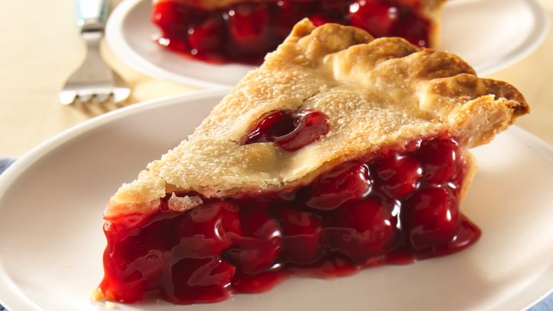
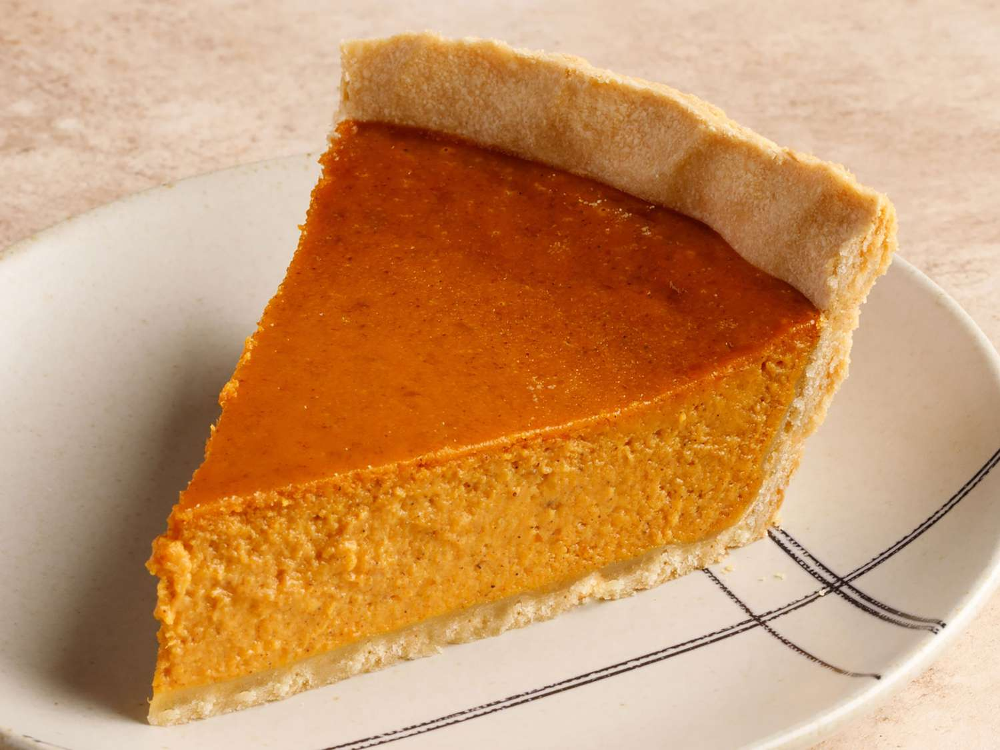
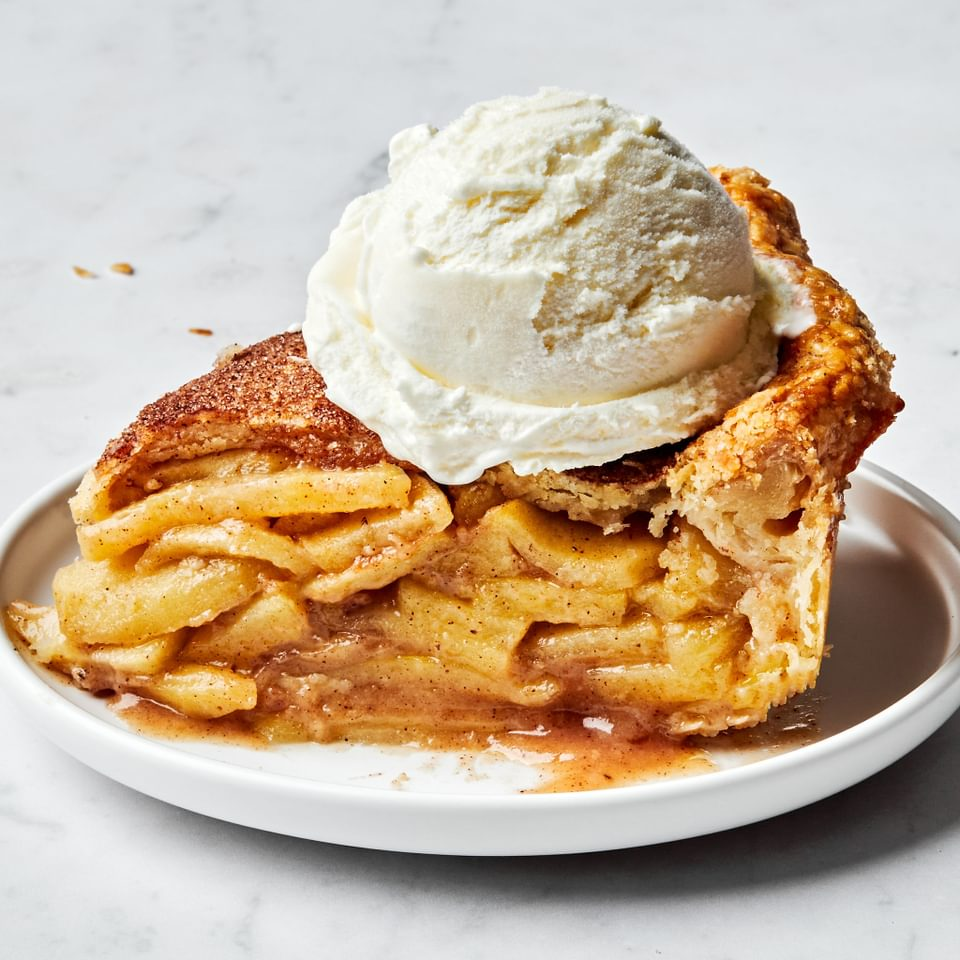

Different Pie Recipies

Cherry Pie
- 4 cups fresh, sour cherries
- 3/4 cup granulated sugar
- 2 tablespoons lemon juice
- 1/3 cornstarch
- 2 tablespoon ground cinnamon
- homemade pie crust
- 1 large egg white
- Granulated sugar

Pumpkin Pie
- 1 9-inch homemade pie crust
- 3/4 cup granulated sugar
- 1 teaspoon ground cinnamon
- 1/2 teaspoon salt
- 1/2 teaspoon ground ginger
- 1/4 teaspoon ground cloves
- 2 large eggs
- 15 ounce can canned pumpkin
- 12 ounce can evaporated milk

Apple Pie
- 6 large apples, peeled, cored, and thinly sliced
- 1 1/2 teaspoons ground cinnamon
- 1/4 teaspoon ground allspice
- 1/8 teaspoon ground cloves
- 1/8 ground nutmeg
- 1/4 kosher salt
- 3/4 cup + 1 tablespoon granulated sugar
- 2 tablespoons unsalted butter
- 2 tablespoons all-purpose flour